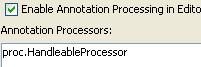
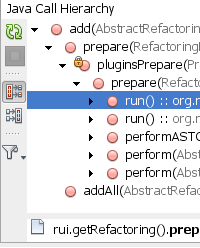
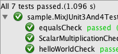

桌面应用程序开发
Java SE 为针对桌面用户创建浏览器小应用程序、命令行工具和图形用户界面的开发者提供了一个编程平台。使用 Java 编写的应用程序可以在 Windows、Mac OS、Linux、Solaris 以及其他操作系统上运行。
标注处理程序
可以将标注处理程序附加到项目中，并在处理代码时使用它们。NetBeans IDE 支持第三方标注处理程序，如 JEE 中的 JPA 2.0 或定制的处理程序。
Javadoc 集成
可以使用自动注释操作为方法生成 Javadoc 代码。您可以使用 Javadoc 分析器插件检查和修复现有的 Javadoc 注释。
Java 调用分层结构
Java 调用分层结构视图将显示一个表示项目中选定方法的调用者和被调用者分层结构的树。
在保存时编译
构建操作已被保存时编译功能取代：现在，IDE 自动构建项目，并且可在保存文件后立即使用运行/调试/测试操作。
如果在调试器已经运行时保存对方法的更改，将会自动重新加载运行的应用程序。方法中的编译错误并不会阻止运行应用程序：在程序运行到相关方法时，调试器将会中止。



单元测试工具
IDE 中集成了 JUnit 3 和 4。您可以在 IDE 中快速创建、运行和重新运行单元测试并查看测试结果。编辑器提供测试和被测试类之间快速导航的键盘快捷键。

非专用项目构建系统
NetBeans IDE 以开放、可扩展、非专用的格式存储项目信息，如 Apache Ant 和 Maven 脚本。
集成的工具
Java Bean 支持可简化 Bean 属性生成和 BeanInfo 编辑过程。NetBeans GUI 构建器可帮助您执行从原型到最终图形用户界面的 Java Swing 开发。完美集成的 NetBeans 调试器和 Netbeans 分析器帮助您编写稳定可靠的 Java 桌面软件。